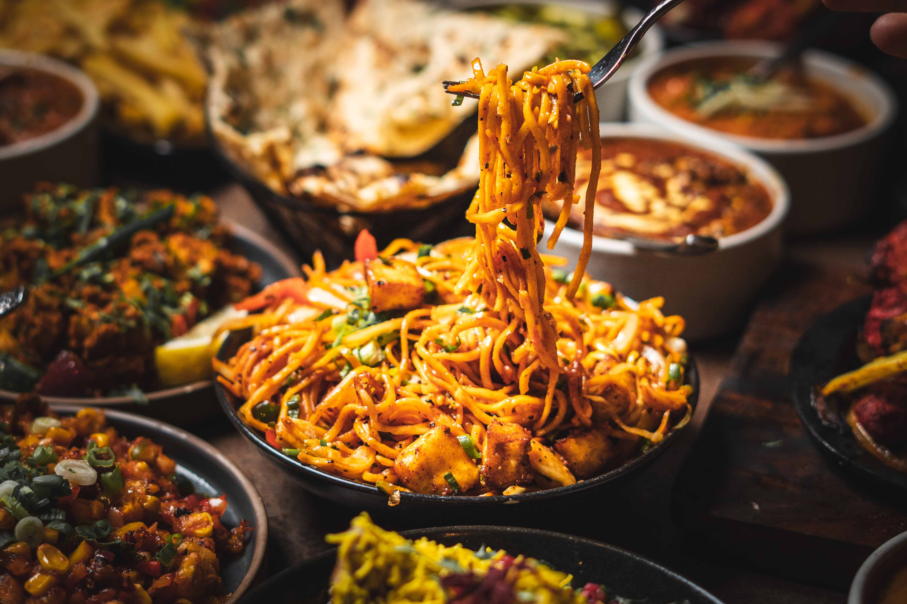
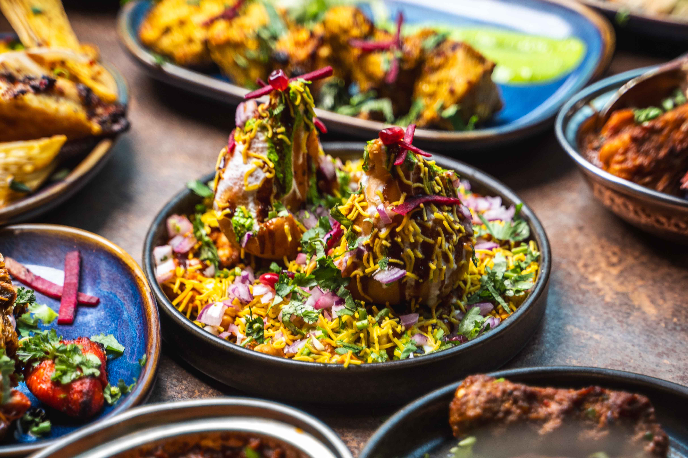
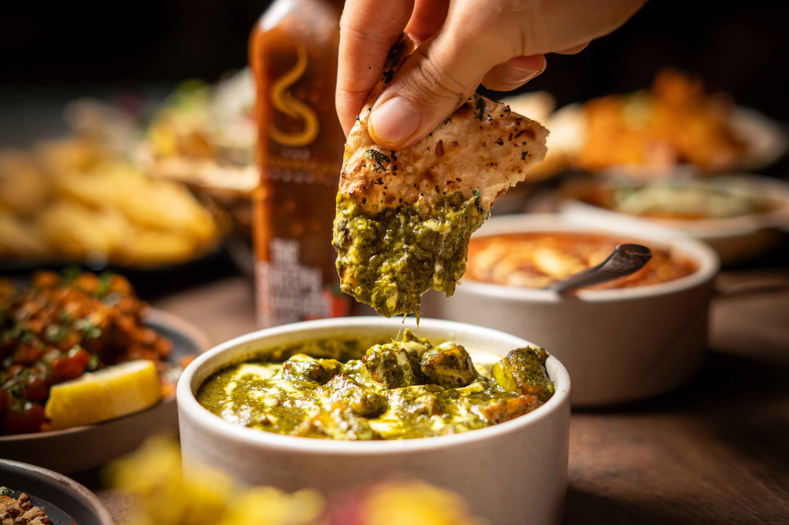
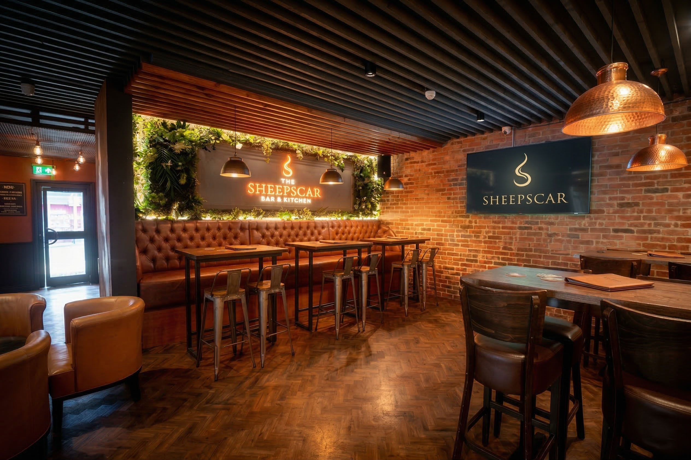
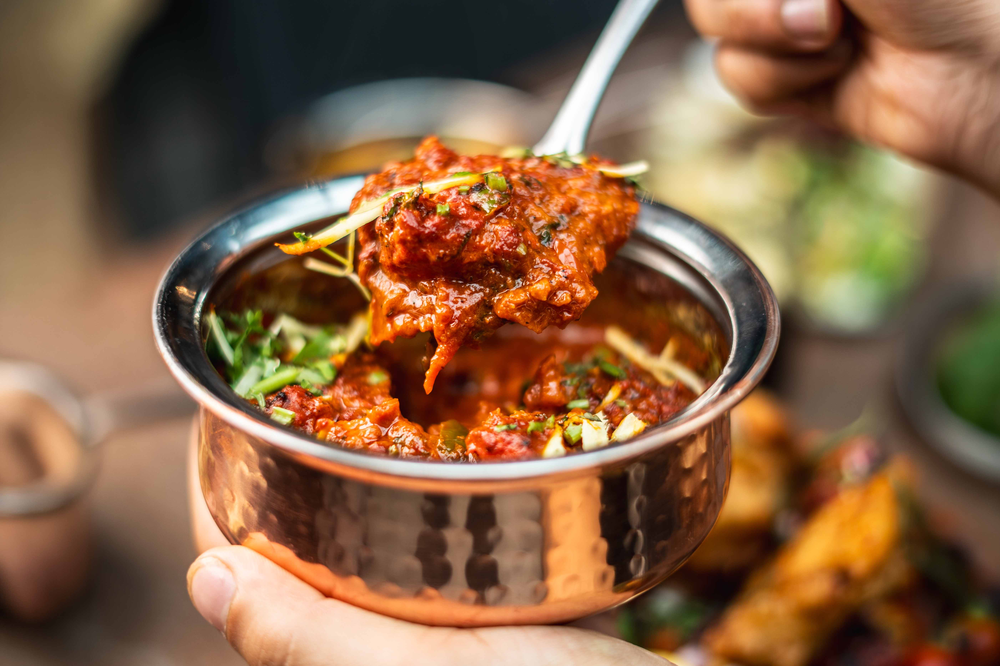

VikVisuals — Services
Natural, appetising food photography for menus, social media, websites and digital campaigns.
Restaurants, Cafes & Food Brands
Working with restaurants, cafes, food brands and hospitality venues to create imagery that honestly and appetisingly showcases what you do. Good food photography isn't just about technical skill — it's about understanding light, composition and storytelling to create images that genuinely engage audiences.
From clean, consistent menu shots to lifestyle-led campaign content, the approach adapts to your brand and platform — whether that's a printed menu, an Instagram post or a digital advertising campaign.
On-location shoots at your venue, working efficiently around service times and team schedules to minimise disruption while maximising the quality of the content created.
Get In Touch

Clean, consistent food photography shot specifically for print and digital menus. Each dish captured to look its best while maintaining a coherent visual style across the full menu — essential for building an appetising, professional-looking menu that works in print and on-screen.

Lifestyle-driven food and drinks photography designed for social media, digital advertising and brand campaigns. Content shot with your specific platforms and audience in mind — creating imagery that stops the scroll and tells a story, not just showcases a product.

Interior and atmosphere photography alongside food content to showcase the full dining experience — from the setting and ambience to the detail of the dishes. Great for websites, Google listings, social profiles and press features where the venue itself is part of the story.
What's Available
Photography
Menu photography (print & digital)
Social media content creation
Campaign & brand imagery
Restaurant & venue interiors
Formats
High-resolution files for print
Web & social-optimised exports
Multiple formats & aspect ratios
Delivery
Fully edited gallery within 5 working days
Social-ready selects within 48 hours

Restaurant Menu Photography — On-Location
Whether you need a full menu shoot, social content or restaurant imagery for a new website, get in touch to discuss your project.